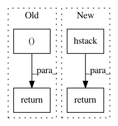

a3a539ed60af074ea3459835c788c2e900f3d8c1,mlxtend/classifier/stacking_cv_classification.py,StackingCVClassifier,predict_meta_features,#StackingCVClassifier#,335
Before Change
.reshape(single_model_prediction.shape[0], 1)
else:
single_model_prediction = model.predict_proba(X)
all_model_predictions = np.hstack((all_model_predictions.
astype(single_model_prediction
.dtype),
single_model_prediction))
return all_model_predictions
def predict(self, X):
Predict target values for X.
After Change
per_model_preds.append(prediction)
return np.hstack(per_model_preds)
def _stack_first_level_features(self, X, meta_features):
if sparse.issparse(X):
stack_fn = sparse.hstack
In pattern: SUPERPATTERN
Frequency: 3
Non-data size: 4
Instances
Project Name: rasbt/mlxtend
Commit Name: a3a539ed60af074ea3459835c788c2e900f3d8c1
Time: 2019-03-31
Author: ackerleytng@gmail.com
File Name: mlxtend/classifier/stacking_cv_classification.py
Class Name: StackingCVClassifier
Method Name: predict_meta_features
Project Name: scikit-video/scikit-video
Commit Name: fe87e2c499d4312656146c33de8c62177944b801
Time: 2017-01-22
Author: tgoodall@utexas.edu
File Name: skvideo/measure/strred.py
Class Name:
Method Name: strred
Project Name: Calamari-OCR/calamari
Commit Name: 8d0d0c7a6db3904f0222cbe058388a92cf21a548
Time: 2021-02-06
Author: ChWick@users.noreply.github.com
File Name: calamari_ocr/thirdparty/ocrodeg/degrade.py
Class Name:
Method Name: transform_image